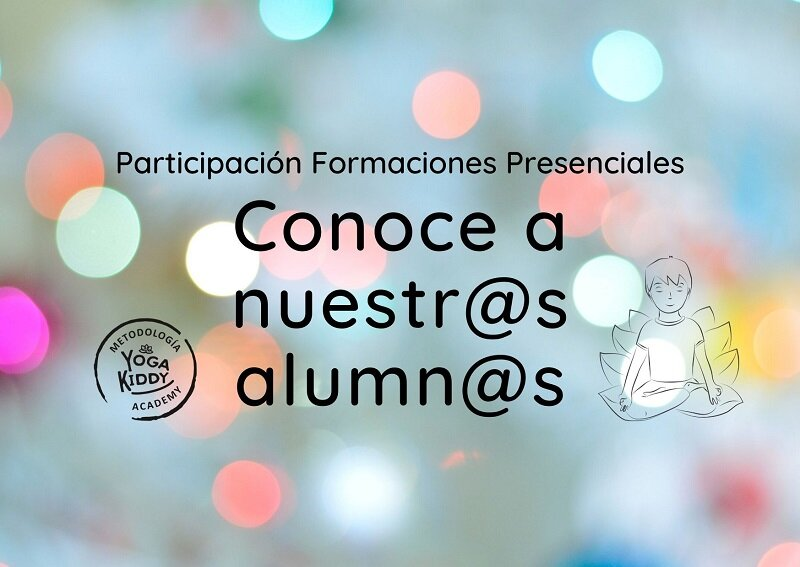

Hoy nos conectamos con Paty quien da clases de yoga a niños y adultos con síndrome de down en la ciudad de Guadalajara, México. Los invitamos a conocerla y seguir a la asociación donde trabaja en su facebook :Un Nuevo Sol🧘♂️💖🧘♀️
Maca: Hola buenas noches, hoy estamos con Paty, ella es de Guadalajara, México. Como estas?
Paty: Todo muy bien, mucho gusto. Muchas gracias por la invitación
Maca: Cuando te interesaste por el yoga?
Paty: El yoga personal fue a partir del 2013 por ahí, vas buscando diferentes opciones. Te das cuenta que hay diferentes escuelas, línea y hasta que tope con vinyasa que fue la que más me llamó la atención y ahí arranqué mi práctica y en 2017 hice mi certificación en Vinyasa krama que esa línea me gustó muchísimo.
Maca: En el caso de yoga para niños? Cuando quisiste empezar a incursionar?
Paty: Vinyasa Krama la empecé a aplicar con mis alumnos ya que soy terapeuta de personas con síndrome de down (adultos y niños). En la filosofía de vinyasa krama se construye todo poco a poco y todos juntos. Terminada la certificación todo una nueva certificación en kinder yoga y complementamos todo perfecto. Las clases las construyo con un objetivo muy claro, en esta asociación es meramente formación académica para personas con síndrome de down y en las prácticas de yoga reforzamos el contenido desde un lugar lúdico.
Maca: Si piensas en algún alumno que se te venga a la cabeza y podes ver si el yoga lo ayudó…
Paty: El síndrome de down una de sus peculiaridades es la hiperelasticidad entonces hay muchas asanas que se les dan muy fáciles. Como maestra debo cuidar sus articulaciones y ahí si controlar si es avance o es por la peculiaridad de su síndrome. Cuando hacen conciencia corporal empiezan a corregir y a entrar a la postura y vemos su avance. Al ligar con lo educativo reforzamos la lectoescritura. Se ve un doble avance de la práctica de yoga y reforzar contenido académico y nos ha ido super bien con los chicos. Este es el segundo ciclo escolar que nuestra planificación anual va con contenido de yoga.
Maca: En el caso de yogakiddy que te interesó?
Paty: Yo lei su blog y adquirí las cartas. Ya son parte de mi kit y me ayudan con las clases. En mi clases las utilizo ya que la ilustración es muy limpia y clara y aparte tiene el paso a paso y ha sido muy claro para los que somos lectores y a quienes todavía no están alfabetizamos la imagen los ayuda.
Maca: En el caso de los materiales, cuál ves que es el que les llama mas la atención?
Paty: Procuramos que no se enganchen con un solo material, es muy rotativo. Los bloques, cintas son muy buenos ya que nos ayudan con la alineación. Los juegos de mesa, tableros, los mandalas ayudan también con el lado lúdico. Las paredes negras como pizarras ayudan ya que los alumnos pueden dibujar las asanas y luego las realizan.
Maca: Por último, queremos invitar a las familias con niños o adultos con síndrome de down que puedan acercarse a la asociación.
Paty: La asociación se llama Un Nuevo Sol es un instituto para personas con síndrome de down. El taller de yoga es parte de sus servicios pero tenemos proyectos con otros grupos ya que hay niños que van a la escuela regular y por la tarde toman sus clases de yoga y ahí hacemos grupos. El 21 de marzo hacemos un yoga masiva con el saludo al sol, hacemos 21 saludos que es muy simbólico en el síndrome de down. Ya es el segundo año y espero que este 2020 también lo hagamos. Contáctenos! Estamos convencidos que el yoga es una excelente opción de crecimiento en todos los sentidos para las personas.
Maca: Te agradecemos tu tiempo y le mandamos un saludo a todos, que estes muy bien
Paty: De nada!
Descubre las fechas de nuestras próximas Formaciones de yoga para niños